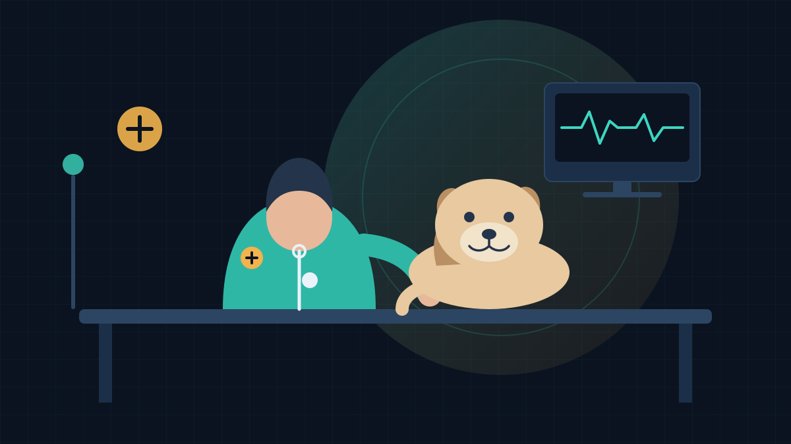
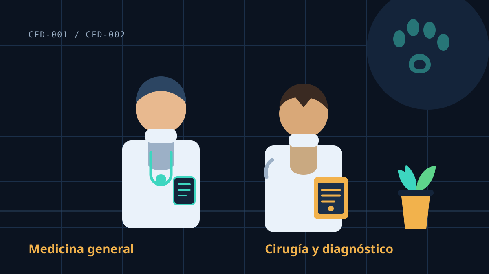
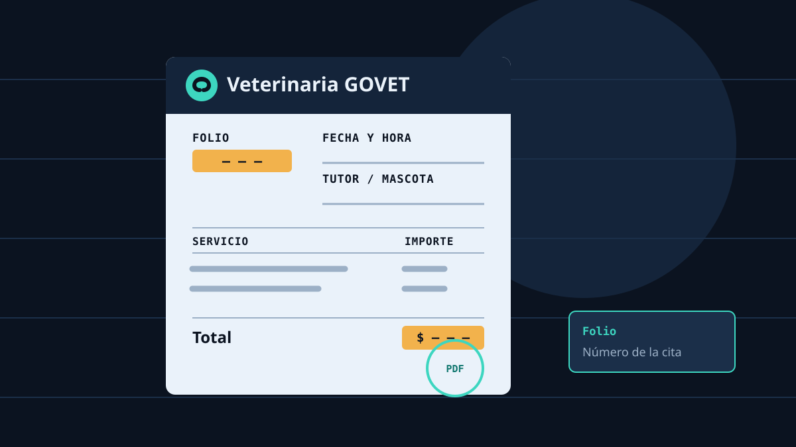

SER-01
Consulta general
Evaluación clínica del paciente.
30 min$250
Enter para abrir · Esc para cerrar
Veterinaria GOVET · Tlapa de Comonfort, Guerrero
Atendemos consultas, vacunación, desparasitación, baño y estilizado, cirugía menor y ultrasonido.
Llamas, te damos hora y al finalizar te llevas tu comprobante con el detalle de lo que se hizo.
Índice rápido
Todo lo que hay aquí, en un solo vistazo. Elige y te llevo directo.
Quiénes somos
Estamos en Tlapa de Comonfort, Guerrero, y atendemos perros, gatos y aves de compañía. Sabemos que detrás de cada mascota hay una persona que quiere una respuesta clara: qué le pasa, cuánto cuesta y cuándo puede entrar.
Por eso usamos una agenda que acomoda las citas por hora y un expediente donde queda el historial de cada paciente. Cuando llegas, tu mascota y su información ya están en el sistema; cuando sales, tienes un comprobante con folio, servicios y total. Nada se anota en una libreta y nada se pierde entre hojas.

En cuatro frases
Un recorrido corto por lo que hacemos, desde la llamada hasta el comprobante.
Si no sabes cuál elegir, llámanos y lo vemos juntos.
Agendar citaUnos dieciséis segundos · cuatro escenas dibujadas a mano · narración y subtítulos en español.
La narización va al mismo ritmo que las imágenes. Si no quieres escucharla, baja el volumen o apágala con el botón de arriba; el texto íntegro está aquí.
1. Veterinaria GOVET, en Tlapa de Comonfort, Guerrero.
2. Seis servicios: consulta, vacunación, desparasitación, baño, cirugía menor y ultrasonido.
3. Agenda por teléfono al 755 123 4567: te damos hora y veterinario.
4. Al final, comprobante en PDF con folio, servicios y total.
Lo que hacemos
Precios en pesos. El tiempo que aparece en cada servicio es el que suele tardar. En total son 6 servicios, desde $150, con 44 minutos de duración promedio.
Toca una tarjeta para ver el detalle. El precio y la duración siguen a la vista.
Teal: servicio disponible Ámbar: precio y duración Ir a la tabla de precios ↓
Evaluación clínica del paciente.
Aplicación de vacuna y registro.
Tratamiento interno y externo.
Higiene y corte de pelo.
Procedimiento ambulatorio.
Estudio de diagnóstico por imagen.
| Clave | Servicio | Qué incluye | Duración | Precio |
|---|---|---|---|---|
| SER-01 | Consulta general | Evaluación clínica del paciente | 30 min | $250 |
| SER-02 | Vacunación | Aplicación de vacuna y registro | 20 min | $180 |
| SER-03 | Desparasitación | Tratamiento interno y externo | 20 min | $150 |
| SER-04 | Baño y estilizado | Higiene y corte de pelo | 60 min | $300 |
| SER-05 | Cirugía menor | Procedimiento ambulatorio | 90 min | $850 |
| SER-06 | Ultrasonido | Estudio de diagnóstico por imagen | 45 min | $600 |
Quién te atiende

Medicina general
Cédula CED-001 · Teléfono 7559876543
Cirugía y diagnóstico
Cédula CED-002 · Teléfono 7552223344
Así funciona
Marca al 755 123 4567 y dinos para qué necesitas la cita.
Te indicamos el precio y la duración estimada del servicio que necesita tu mascota.
La cita queda registrada en la agenda con fecha, hora y veterinario asignado.
Al finalizar te entregamos un PDF con folio, servicios y total.
Antes de llegar
Así se ve por dentro
Tu historial
Cada cita se guarda en el sistema de la clínica con estos datos, y con ellos se arma el comprobante en PDF.

Antes de llamar
Lo que más nos preguntan al teléfono. Si no sabes qué servicio necesitas, dinos qué le pasa a tu mascota y lo vemos juntos.
La consulta general son $250 y suele tardar 30 minutos. Si llevas más de un servicio, el total se suma en la misma cita.
Agendamos por teléfono al 755 123 4567. Con la cita metida en la agenda, tu mascota y su historial ya están ahí cuando llegues.
Al terminar sale un PDF con folio, servicios aplicados y total. Lo guardas o lo imprimes.
Folio, fecha y hora, quién trae a quién, el veterinario, lo aplicado y el total. Nada se anota en papel.
Sí, si el sistema GOVET está encendido: te devuelve el folio. Si no, el asistente te pasa el teléfono.
Sí, al mismo número, el 755 123 4567. Si no contesta, llámanos y registramos tu cita.
Estamos aquí
Si tienes dudas sobre un servicio o necesitas cambiar una cita, llámanos. Aquí seguimos, en Tlapa de Comonfort.
Teléfono755 123 4567
DirecciónTlapa de Comonfort, Guerrero
RFCGOVET-2026-01